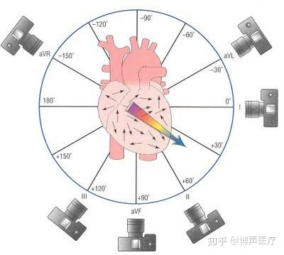

从电极到导联：构建心电图的几何与物理空间
观察者的视角：从电偶极子到导联轴的跃迁
在第一章中，我们已经建立了一个关键的物理模型：心脏在电学上可以被简化为一个不断运动、大小和方向持续变化的总和电偶极矩（Cardiac Vector, $\vec{P}$）。然而，物理学中的“现象”与临床上的“观测”之间存在一道鸿沟。心电图机并不能直接“捕捉”到这个在三维空间中跳动的矢量，它只能通过放置在体表的电极，记录下这个矢量在特定方向上的投影。
本节将完成从物理本质到临床观测的逻辑跃迁：我们将引入导联轴（Lead Axis）的概念，并运用“相机隐喻”来理解为什么我们需要从多个角度观测心脏。
从矢量到投影：物理学的降维打击
在物理学中，观测一个矢量最基本的方法是将其投影到一个已知的坐标轴上。心电图（ECG）的每一个导联，本质上就是在体表建立了一个特定的一维观测轴。
公理：导联轴的定义
导联轴是一个由正、负电极连线定义的空间矢量，通常用单位矢量 $\hat{L}$ 表示。它规定了观测的方向性：电信号从负电极指向正电极的方向被定义为该导联的正向。
当心脏的除极波（即瞬时综合电向量 $\vec{P}$）在空间中传导时，它与导联轴 $\hat{L}$ 之间的相互作用遵循点积定律（Dot Product Law）。我们在心电图纸上看到的电位波动 $V_{ecg}$，实际上是该向量在导联轴上的标量投影：
其中：
- $|\vec{P}|$ 代表心脏电活动的强度（总能量）。
- $\theta$ 是心脏向量与导联轴之间的夹角。
这意味着，心电图上波形的大小不仅取决于心脏本身发出的电信号强弱，更取决于观测的角度。
相机隐喻：电极作为观测镜头
为了直观理解这一物理过程，我们可以将每一个导联想象成安装在体表的一台“相机”。
- 电极不是传感器，而是镜头：单个电极本身不产生信号，它只是一个观测点。只有当两个电极（或一个电极与一个参考零点）结合时，才构成了一个“机位”。
- 正极是取景器：导联的正极（Positive Electrode）就是相机的镜头所在位置。如果电向量（去极化波）正对着镜头冲过来（$\theta < 90^\circ$），相机记录到的是正向波；如果电向量背离镜头而去（$\theta > 90^\circ$），记录到的则是负向波。
- 垂直即“隐身”：当电向量运动方向与导联轴完全垂直时（$\theta = 90^\circ$），由于 $\cos 90^\circ = 0$，导联轴上不会产生任何电位偏移。在心电图上，这表现为等电位线或双相波。
为什么单一视角是危险的？
如果心脏只是一个在直线路径上往复运动的质点，我们或许只需要一个导联。但心脏是一个复杂的三维结构，其除极过程类似于一场从窦房结发起、随后向四周炸开的“电化学风暴”。
假设我们只有一个导联（例如导联 I，从右臂指向左臂）。如果心脏发生了一次完全垂直于该轴（即从头指向脚）的严重心肌梗死信号，导联 I 可能会因为投影接近零而完全漏诊。
病理陷阱：电轴偏移的误导性
在单一导联中，波形高度的降低可能意味着两个截然不同的事实：
- 心脏产生的电能量减弱了（如心肌坏死）。
- 心脏电活动的总体方向发生了偏转，变得与该导联轴垂直（如心脏转位）。
这就是为什么临床上必须使用 12 导联系统 来构建全方位的空间坐标系。
空间维度的解构：额面与横断面
为了完整捕捉心脏向量 $\vec{P}$，我们需要在空间中建立两个互相垂直的观测平面：
- 额面（Frontal Plane）：由肢体导联（I, II, III, aVR, aVL, aVF）构成。它像一面镜子正对着病人的胸膛，观察电流是向左、向右还是向上、向下流动。
- 横断面（Horizontal Plane）：由胸前导联（V1-V6）构成。它像一台从病人头顶向下俯视的扫描仪，观察电流是向前（胸壁）还是向后（背部）流动。
这种“立体环绕式”的观测体系，确保了无论心脏向量指向何方，总会有至少一个导联能够捕捉到它的主要能量。
导向下一节：从抽象到实体
通过本节的推导，我们明白心电图并非直接测量心脏电压，而是测量空间向量在特定轴上的投影。这种从一维标量向多维向量投影的认知转变，是理解后续所有复杂心电图表现的基石。
在接下来的 sec-2 中，我们将具体探讨人类历史上第一个标准化的观测系统——爱因托芬三角（Einthoven's Triangle），看它是如何利用简单的几何美学，在人体额面上建立起最初的坐标系的。
双极肢体导联：爱因托芬三角的几何美学
在 第一节 中，我们建立了一个核心认知：心电图是心脏总和电偶极矩在特定导联轴上的投影。然而，要将这种抽象的物理投影转化为临床可用的诊断工具，我们需要一套标准化的坐标系。
1901年，威廉·爱因托芬（Willem Einthoven）通过将人体简化为一个等边三角形，奠定了现代心电学的基础。本节将从物理学和几何学的视角，深入解析双极肢体导联（Bipolar Limb Leads）的构建逻辑，以及隐藏在“爱因托芬三角”背后的数学美学。
肢体作为导线的延伸：容积导电理论
在探讨导联之前，必须解决一个物理难题：心脏位于胸腔深处，而电极放置在四肢末端。为什么在手腕和脚踝处能测得心脏的电信号？
根据容积导电（Volume Conduction）理论，人体可以被视为一个充满电解质液体的非均匀导体。虽然躯干和四肢的阻抗各异，但对于微弱的心电信号而言，四肢可以被视为躯干与电极之间的“延长线”。
物理假设：等效电源点
- 心脏是一个位于胸腔中心的单一电偶极子。
- 双臂和左腿与躯干的连接点（肩关节和髋关节）在电学上等同于等边三角形的三个顶点。
- 人体是一个均匀的球形导体。
虽然这些假设在解剖学上并不完全精确，但它们在几何上提供了一个高度对称且稳定的参考框架。
双极导联的定义：电位差的矢量化
所谓“双极（Bipolar）”，是指每一个导联都由两个电极组成：一个正极和一个负极。心电图机测量的不是某个点的绝对电位，而是两个顶点之间的电位差。
我们将右臂（Right Arm, RA）、左臂（Left Arm, LA）和左腿（Left Leg, LL）定义为三角形的三个顶点。右腿（RL）通常作为接地端，不参与信号构建。
- 1. 导联 I (Lead I): 配置为左臂（+），右臂（-）。其导联轴方向从右向左，水平指向 $0^\circ$。数学表达：$I = \Phi_{LA} - \Phi_{RA}$。
- 2. 导联 II (Lead II): 配置为左腿（+），右臂（-）。其导联轴方向从右肩指向左腹股沟，指向 $+60^\circ$。数学表达：$II = \Phi_{LL} - \Phi_{RA}$。
- 3. 导联 III (Lead III): 配置为左腿（+），左臂（-）。其导联轴方向从左肩指向左腹股沟，指向 $+120^\circ$。数学表达：$III = \Phi_{LL} - \Phi_{LA}$。
爱因托芬三角的几何构建
如果我们把这三个导联轴平移到空间中心（心脏所在位置），它们就构成了一个包围心脏的等边三角形。
数学逻辑：爱因托芬定律的推导
爱因托芬三角不仅是一个视觉模型，它更包含了一个严谨的数学约束。根据基尔霍夫电压定律（KVL），在一个闭合回路中，电位差的总和必须为零。
让我们观察这三个导联的电位定义：
如果我们尝试将导联 I 和导联 III 相加：
这个结果恰好等于导联 II 的定义。
爱因托芬定律 (Einthoven's Law)
在任何时刻，三个标准肢体导联的电位值满足以下代数关系：
临床陷阱：极性与定律
在实际观察心电图纸时，如果发现 $I + III \neq II$，通常意味着：
- 电极放置位置错误（如左右手接反）。
- 导联线接触不良或存在严重的外部干扰。
- 机器定标异常。
投影的艺术：为什么导联 II 最特殊？
在临床实践中，导联 II 往往是心律分析的首选导联。正常情况下，心脏的总和除极向量（P波和QRS主波）从右上指向左下，夹角大约在 $+45^\circ$ 到 $+60^\circ$ 之间。
根据点积公式 $V = |\vec{P}| \cos \theta$，当心脏向量 $\vec{P}$ 的方向与导联轴平行时，投影值最大。导联 II 的轴向（$+60^\circ$）与正常心脏电轴高度重合，因此其波形通常最为清晰。
总结：从三角形到六轴系统
爱因托芬三角为我们提供了一个观察心脏额面的原始框架。它告诉我们，通过在肢体上放置三个电极，我们就能获得心脏在 $0^\circ, 60^\circ, 120^\circ$ 三个维度的投影。
然而，这个三角形的视角仍然存在“盲区”。为了填补这些空白，我们需要引入“虚拟电极”的概念。在下一节 第三节 中，我们将探讨威尔逊（Wilson）如何通过电阻网络创造出一个“虚拟零点”，从而推导出加压肢体导联（aVR, aVL, aVF）。
本节要点
- 双极导联测量的是两个肢体顶点之间的电位差。
- 爱因托芬三角假设人体是等边三角形，心脏位于中心。
- 爱因托芬定律 ($I + III = II$) 是基于基尔霍夫定律的必然数学结果。
- 导联 II 因为与正常心脏电轴平行，通常具有最清晰的波形。
加压肢体导联与威尔逊中央电端：虚构的零点
在 第二节 中，我们见证了爱因托芬如何利用简单的等边三角形几何学，捕捉到了心脏在额面上的三个投影（I, II, III）。然而，这种“双极”观测法存在一个本质的局限：它只能测量两个点之间的电位差。
如果我们想从三角形的每一个顶点（右臂、左臂、左腿）直接“俯视”位于中心的心脏，我们需要一种全新的观测方式——单极导联（Unipolar Leads）。本节将深入探讨心电学中最精妙的物理构造：如何通过一个简单的电阻网络，在人体中心凭空创造出一个“虚构的零点”，并以此构建出加压肢体导联（aVR, aVL, aVF）。
寻找绝对的参照：单极导联的物理挑战
在物理测量中，电压（电位差）永远是相对的。如果要测量某个特定电极（探查电极）的“绝对电位”，我们必须找到一个电位恒定为零的参考点。
在实验室里，我们可以轻松地将电路接地。但在动态跳动的人体中，哪里才是“零电位”？
单极导联的定义
单极导联是指将一个探查电极（Exploring Electrode）置于体表某处，而将另一个参考电极（Reference Electrode）的电位人为地维持在接近零的水平。此时，导联记录到的电压几乎完全反映了探查电极所在位置的电位变化。
威尔逊中央电端（WCT）：电路拓扑的巧妙平衡
1934年，诺曼·威尔逊（Frank Norman Wilson）提出了一个天才的设想：如果心脏位于等边三角形的中心，根据物理学的电场对称性，将三个顶点（RA, LA, LL）的电位进行算术平均，其总和理论上应该恒等于零。
WCT 的电路构造
将来自右臂（RA）、左臂（LA）和左腿（LL）的导线分别连接到一个 $5k\Omega$ 的高精度电阻上，然后将这三个电阻的另一端汇聚到一个公共点。这个汇聚点被称为威尔逊中央电端（Wilson Central Terminal, WCT）。
根据基尔霍夫电流定律（Kirchhoff's Current Law），在这个节点处，流入电端的电流总和为零。其电位 $V_{WCT}$ 的数学表达式为：
在理想状态下，$V_{WCT}$ 在整个心动周期中保持高度稳定，几乎可以作为“零电位”参考点。于是，最初的单极肢体导联（$V_R, V_L, V_F$）诞生了：
- $V_R = \Phi_{RA} - V_{WCT}$
- $V_L = \Phi_{LA} - V_{WCT}$
- $V_F = \Phi_{LL} - V_{WCT}$
从 V 到 aV：戈德伯格的“加压”魔法
虽然威尔逊解决了“零点”问题，但临床医生很快发现了一个新问题：由于 WCT 包含了探查电极自身的部分电位，这导致测得的信号振幅非常微弱。
1942年，伊曼纽尔·戈德伯格（Emanuel Goldberger）发现，如果在测量某个肢体电极时，暂时切断该肢体与 WCT 之间的连接，信号幅度将显著增强。
加压定律（Augmentation Law）
通过断开探查肢体与参考端的连接，测得的电位振幅是原始单极导联的 1.5 倍。
这就是为什么这些导联被称为加压（Augmented）单极肢体导联，并在缩写前加上了小写的 "a"。
空间几何：填补额面的观察空白
加压肢体导联的引入，彻底改变了我们对心脏额面的观察维度。如果说导联 I, II, III 构成了三角形的边，那么 aVR, aVL, aVF 就构成了从顶点指向中心的中线。
- 1. aVF (Augmented Vector Foot): 探查位置为左腿。导联轴方向垂直向下，指向 $+90^\circ$。它是观察心脏下壁（Inferior Wall）最纯粹的视角。
- 2. aVL (Augmented Vector Left): 探查位置为左臂。导联轴方向指向左上方，指向 $-30^\circ$。是观察心脏高侧壁（High Lateral Wall）的关键机位。
- 3. aVR (Augmented Vector Right): 探查位置为右臂。导联轴方向指向右上方，指向 $-150^\circ$。它从心脏的右上方向下俯视心腔内部。
病理陷阱：aVR 的“镜像”错觉
由于 aVR 的导联轴方向与大多数心脏除极向量（通常指向左下）完全相反，因此在正常心电图中，aVR 的所有波形（P, QRS, T）都应该是倒置的。如果 aVR 出现了直立的 R 波，通常意味着电极接反，或者存在严重的右心室肥厚或右位心。
威尔逊中央电端的局限性与物理真实性
尽管 WCT 被称为“零电位”，但它并非真正的物理地。它是一个虚构的参考点。
- 非均匀导体效应：人体并非完美的球体，各组织电阻率不同，使得 WCT 并不完全位于电学中心。
- 心脏位置偏移：解剖位置的个体差异导致 WCT 提供的“零点”存在细微偏移。
然而，WCT 的建立不仅让我们获得了 aV 系列导联，更为 第五节 中即将讨论的胸前导联（Precordial Leads）提供了不可或缺的参考基准。
总结：额面六轴系统的合体
通过本节的探讨，我们现在手中已经握有六台“相机”：三台双极相机（I, II, III）观察三角形的边；三台单极加压相机（aVR, aVL, aVF）从顶点射向中心。
这六个导联轴在空间上每隔 $30^\circ$ 就布下一道岗哨，共同构成了额面六轴参考系统。在接下来的 第四节 中，我们将学习如何将这六个维度整合在一起，去精确判定心脏的平均电轴。
● [交互式演示：WCT 电阻模拟器]
尝试改变 RA, LA, LL 的输入电位，观察 WCT 节点的电压波动。当三个电阻平衡时，验证 $V_{WCT} = (RA+LA+LL)/3$。
六轴参考系统：额面电轴的完整版图
在前面的章节中，我们分别探讨了爱因托芬建立的双极肢体导联 [REF:sec-2] 以及威尔逊与戈德伯格完善的加压单极肢体导联 [REF:sec-3]。至此，我们在人体额面（Frontal Plane）上已经拥有了六个观测视角。然而，在临床实践中，如果这些导联轴仅仅作为孤立的几何线条存在，我们将很难直观地判断心脏电活动的总体趋向。
本节将通过几何平移的方法，将这六个导联轴整合为一个高度对称、覆盖 360 度空间的坐标体系——六轴参考系统（Hexaxial Reference System）。这是心电图判读从“波形识别”跨越到“空间定位”的关键步骤。
几何平移：从三角形到放射星形
在物理学中，矢量的位置是可以平移的，只要保持其大小和方向不变，其物理性质保持恒定。为了建立统一的参考坐标系，我们假设心脏的总和电偶极子位于坐标原点 $(0,0,0)$。
- 双极导联的平移：我们将爱因托芬三角的三条边（导联 I, II, III）向中心平移，使它们的中点全部重合于心脏中心。
- 加压导联的整合：由于 aVR, aVL, aVF 本身就是从心脏中心指向肢体顶点的向量，它们已经处于原点位置。
当这六条直线交汇于一点时，一个每隔 $30^\circ$ 就有一条观测轴的放射状系统便赫然显现。
六轴参考系统的公理化定义
六轴参考系统是将额面六个肢体导联轴平移至同一原点后构成的几何模型。它将额面划分为 12 个对称的扇区，每个导联轴之间的夹角均为 $30^\circ$ 的倍数。该系统是判定平均心电轴（Mean Electrical Axis）的绝对参照系。
额面版图的度数分配
为了精确描述心脏向量的方向，心电学引入了极坐标系。规定：以导联 I 的正极方向为 $0^\circ$，顺时针方向为正（$+1^\circ$ 至 $+180^\circ$），逆时针方向为负（$-1^\circ$ 至 $-180^\circ$）。
按照这一标准，六个导联的正极在六轴系统中的空间分布如下：
- 导联 I：位于水平向左（患者的左侧），定义为 $0^\circ$。
- 导联 II：位于左下方，与导联 I 成 $60^\circ$ 角，定义为 $+60^\circ$。
- 导联 III：位于右下方，与导联 I 成 $120^\circ$ 角，定义为 $+120^\circ$。
- aVF：垂直向下，指向脚部，定义为 $+90^\circ$。
- aVL：指向左上方，定义为 $-30^\circ$。
- aVR：指向右上方，定义为 $-150^\circ$（或表示为 $+210^\circ$）。
逻辑推导：为什么是 $30^\circ$？
六轴系统的这种完美对称性并非巧合，而是由爱因托芬三角的等边几何性质决定的。
根据几何学：
- 等边三角形的内角为 $60^\circ$。因此，导联 I、II、III 之间的夹角必然是 $60^\circ$（平移后）。
- 加压导联（如 aVF）作为中线，垂直平分三角形的边（导联 I）。因此，aVF 与导联 I 呈 $90^\circ$。
- 由此推导出：aVF ($+90^\circ$) 与导联 II ($+60^\circ$) 之间恰好相差 $30^\circ$。
这种每隔 $30^\circ$ 布置一个观测点的设计，使得额面没有任何一个死角。无论心脏向量如何偏转，总能通过至少两个相邻导联的振幅比例，利用三角函数反推出确切的电轴角度。
解剖学映射：导联组的“联防体系”
在临床应用中，我们很少孤立地看一个导联，而是将它们组合成“导联组”。六轴系统为我们提供了理解这些组合的几何依据。
1. 下壁导联组（Inferior Leads）：II, III, aVF
这三个导联的正极都指向下方（$+60^\circ, +120^\circ, +90^\circ$）。它们就像三台并排安装在心脏下方的相机，共同监视着心脏的下壁（Inferior Wall）。
- 临床意义：如果这三个导联同时出现 ST 段抬高，物理逻辑告诉我们：心脏产生的异常电流正笔直地冲向下方。这通常意味着右冠状动脉（RCA）发生了阻塞。
2. 高侧壁导联组（High Lateral Leads）：I, aVL
这两个导联指向左上方（$0^\circ, -30^\circ$）。它们监视着心脏的左侧高位壁。
- 临床意义：它们对于捕捉回旋支（LCX）闭塞引起的电活动变化至关重要。
3. 右侧视角：aVR
aVR 孤零零地指向 $-150^\circ$（右上）。在正常的解剖结构中，心脏没有主要的部分位于这个方向。因此，aVR 看到的主要是心腔内部的倒影。
- 临床意义：虽然它常被忽视，但在某些病理状态下（如左主干冠脉闭塞），aVR 的异常抬高具有极高的诊断价值，因为它反映了心脏基底部整体的缺血。
病理陷阱：电轴左偏的几何误区
初学者常认为电轴左偏（Left Axis Deviation）意味着心脏“向左移动了”。实际上，在六轴系统中，电轴左偏指的是心脏总向量指向了 $-30^\circ$ 到 $-90^\circ$ 的区间。这往往不是物理位置的移动，而是因为左心室肥厚或左前分支传导阻滞，导致电流在左上方的传导时间延长、能量增加，从而“拉动”了总向量。
向量投影的动态演示
为了理解六轴系统是如何工作的，我们可以引入一个交互式的思考模型：
想象心脏向量 $\vec{P}$ 是一根转动的指针。
- 当指针指向 $+60^\circ$ 时，它正对着导联 II，此时导联 II 的 R 波振幅达到最大值。
- 与此同时，它与 aVL ($-30^\circ$) 的夹角为 $90^\circ$。根据点积定律 $\cos 90^\circ = 0$，此时 aVL 应该呈现为一个完美的等电位双相波。
这种“一盈一亏”的几何关系，是快速判定心电轴的物理捷径。

总结：额面的全景视图
六轴参考系统将原本零散的肢体导联整合为了一个严密的逻辑整体。它不仅是一个坐标系，更是一张解剖学与物理学的映射表。
- 它告诉我们“在哪里看”：II, III, aVF 看下壁；I, aVL 看侧壁。
- 它告诉我们“怎么算角度”：通过比较各导联的振幅，可以精确计算出心脏除极的平均方向。
掌握了额面的六轴系统后，我们已经能够识别电流在上下、左右方向上的运动。然而，心脏是一个三维实体，电流还会向前（胸壁）和向后（背部）流动。为了捕捉这一维度的信息，我们需要在下一节 [REF:sec-5] 中引入垂直于额面的另一个系统——胸前导联横断面视角。
本节要点小结
- 六轴系统是通过平移肢体导联轴构成的 360 度额面参考系。
- 导联 I 定义为 $0^\circ$，顺时针为正，逆时针为负。
- 下壁导联组 (II, III, aVF) 监控 $+60^\circ$ 到 $+120^\circ$ 的区域。
- 高侧壁导联组 (I, aVL) 监控 $0^\circ$ 到 $-30^\circ$ 的区域。
- 各导联间 $30^\circ$ 的间隔是利用几何原理定位心电轴的基础。
交互式学习建议
尝试寻找一份标准 12 导联心电图。找到 QRS 波群最接近等电位（正负波幅相等）的那个肢体导联。根据六轴系统，心脏的平均电轴必然垂直于该导联轴。例如，如果 aVL 表现为双相波，那么电轴极有可能指向 $+60^\circ$（导联 II 的方向）。这种“垂直判定法”是临床医生最常用的物理直觉。
胸前导联：横断面的立体环绕视角
在前面的章节中，我们通过肢体导联建立了一套严密的额面（Frontal Plane）观测系统。利用爱因托芬三角 [REF:sec-2] 和加压肢体导联 [REF:sec-3]，我们能够精确地判断心脏电流是向上、向下、向左还是向右流动。然而，心脏并非一张扁平的纸，而是一个位于胸腔深处的、具有厚度的三维泵体。
如果你只使用肢体导联，就像是只从正前方观察一栋建筑。你可能看到了建筑的高度和宽度，但你无法判断这栋建筑的深度——你不知道电流是向身体的前方（胸壁）还是后方（背部）传导。为了填补这一空间维度的空白，我们需要引入胸前导联（Precordial Leads），构建起心电图的横断面（Horizontal Plane）视角。
维度缺失的危机：为什么额面视角是不够的？
在额面六轴系统中，所有的导联轴都平行于冠状面。这意味着，如果心脏产生了一个完全指向前方（正对着胸骨）或完全指向后方（背向脊柱）的电向量，它在所有的肢体导联轴上的投影都将接近于零。
物理公理：投影的盲区
若心脏向量 $\vec{P}$ 与观测平面（额面）垂直，即 $\vec{P} \perp \text{Plane}_{frontal}$，则该平面内所有导联记录到的电位均为零。在临床上，这意味着仅靠肢体导联无法诊断发生在心脏前壁、后壁或室间隔中部的许多重要病变。
横断面视角（Horizontal Plane）的引入，将我们的观测坐标系从 $XY$ 平面扩展到了 $XZ$ 平面（假设 $Z$ 轴为前后方向）。这种“立体环绕式”的布局，使心电图机从一台“相机”进化为了一台“CT扫描仪”。
威尔逊中央电端的再次召唤：单极观测的物理基石
胸前导联（V1-V6）全部属于单极导联。这意味着它们与加压肢体导联一样，需要一个稳定的“零电位”作为参考点。
正如在 [REF:sec-3] 中所讨论的，威尔逊中央电端（WCT）通过将三个肢体电极连接到高阻抗电阻网络，创造了一个位于心脏中心的“虚拟零点”。
在胸前导联的测量中，探查电极（$V_n$）被直接放置在心脏前方的胸壁上。由于探查电极距离心脏极近，它捕捉到的局部电位变化非常显著，因此不需要像肢体导联那样进行“加压”处理。这六个电极在横断面上呈扇形排列，形成了一个包围心脏的半圆形观测阵列。
解剖定位：胸壁上的六个哨所
胸前导联的精确放置不仅是操作规范的要求，更是几何投影准确性的前提。每一个导联的解剖位置都对应着心脏特定的解剖区域。
- V1：胸骨右缘第 4 肋间。视角：位于心脏的右前方，主要观察右心室壁和室间隔。
- V2：胸骨左缘第 4 肋间。视角：与 V1 相对，更靠近室间隔的左侧。
- V3：V2 与 V4 连线的中点。视角：过渡区域，观察心室前壁。
- V4：左锁骨中线与第 5 肋间相交处。视角：直对心尖区。
- V5：左腋前线，与 V4 同一水平。视角：观察左心室前侧壁。
- V6：左腋中线，与 V4 同一水平。视角：观察左心室侧壁。
向量投影的演变：R 波递增规律的数学推导
在正常的生理状态下，心室除极的总向量 $\vec{P}$ 主要由强大的左心室主导，其方向在横断面上通常指向左后方。
通过运用点积定律 $V = |\vec{P}| \cos \theta$，我们可以推导出胸前导联波形的形态演变逻辑：
1. 右侧导联 (V1, V2)：负向波主导
V1 的导联轴指向右前方。由于心室除极的总向量背离 V1 向左后方运行，夹角 $\theta > 90^\circ$，导致 $\cos \theta$ 为负值。呈现为一个小 R 波（代表室间隔除极）和一个深 S 波（代表左心室主体除极背离）。
2. 过渡区导联 (V3, V4)：等电位平衡
随着电极向左移动，导联轴逐渐与总向量趋于垂直。在 V3 或 V4 附近，向量投影的正负分量达到平衡。R 波与 S 波的振幅大致相等（$R/S \approx 1$）。
3. 左侧导联 (V5, V6)：正向波主导
V5 和 V6 的导联轴指向左侧。此时，心室总向量正对着电极冲过来，夹角 $\theta < 90^\circ$。呈现为高耸的 R 波，S 波极小或消失。
物理现象：R 波递增 (R-wave Progression)
在横断面上，从 V1 到 V6，R 波的振幅应当逐渐增加，而 S 波的深度应当逐渐减小。这是心脏向量在水平面旋转投影的必然物理结果。
临床陷阱：R 波递增不良 (Poor R-wave Progression)
如果 V1 到 V4 的 R 波振幅没有按预期增加，或者在 V3 处 R 波依然极小，这通常提示：
- 前壁心肌梗死：产生 R 波的电能量源（心肌）消失了。
- 左心室肥厚：强大的向左后方的向量过度增强，压制了前方的投影。
- 电极位置错误：电极放置过高或过低，偏离了心脏的电学中心。
空间的立体扫描：从平面到容积
胸前导联的真正威力在于它与肢体导联的正交互补。如果我们把肢体导联比作“经线”，那么胸前导联就是“纬线”。通过这两组导联的组合，我们可以在脑海中构建出心脏电活动的 3D 模型：
- 前间壁病变：在横断面的 V1-V2 显现。
- 前壁病变：在横断面的 V3-V4 显现。
- 侧壁病变：在额面的 I, aVL 与横断面的 V5-V6 同时显现（双重验证）。
- 下壁病变：在额面的 II, III, aVF 显现。
这种空间上的冗余和互补，极大地提高了心电图诊断的敏感性。例如，某些后壁心肌梗死在普通 12 导联中可能只表现为 V1 的 R 波增高（作为后壁 ST 段抬高的镜像改变），如果没有横断面的逻辑支撑，这种细微的信号极易被误诊为右心室肥厚。
总结：构建完整的坐标系
通过本节的学习，我们完成了心电图几何空间的最后一块拼图。我们不再仅仅关注纸上的波形，而是学会了透过胸壁，看到六个单极导联轴如何像雷达一样环绕着心脏。在理解了额面（肢体导联）和横断面（胸前导联）的几何逻辑后，我们已经准备好进入下一章节。在 [REF:sec-6] 中，我们将运用这些几何真理，去推导心电图波形极性的最终数学法则——向量投影定律。
本节要点小结
- 胸前导联（V1-V6）提供了心脏的横断面（水平面）视角。
- 它们是单极导联，以威尔逊中央电端（WCT）为参考零点。
- 解剖位置决定了它们对心脏不同壁（间壁、前壁、侧壁）的监控能力。
- R 波递增规律是正常心脏电轴向左后方偏移在横断面上的几何投影表现。
- 12 导联系统通过额面与横断面的结合，实现了对心脏电活动的全方位三维扫描。
向量投影定律：波形极性的数学真理
在前面的章节中，我们已经完成了心电图观测系统的全方位构建：从爱因托芬的双极肢体导联 [REF:sec-2]，到威尔逊的单极加压导联 [REF:sec-3]，再到横跨胸壁的胸前导联 [REF:sec-5]。我们现在拥有了 12 个分布在三维空间中的“相机机位”。
然而，掌握了机位分布只是第一步。临床医生面临的真正挑战是：给定一个心脏电向量，如何准确预判它在特定导联上产生的波形形态？ 为什么同样的电活动，在导联 II 表现为高耸的 R 波，而在 aVR 却表现为深邃的倒置波？
本节将揭示心电图最核心的物理本质——向量投影定律（Vector Projection Law）。我们将通过严谨的矢量点积（Dot Product）推导，将解剖学的除极过程转化为数学上的函数波动，从而赋予你一种“透视”能力：无需死记硬背，只需通过几何直觉即可推导出任何导联的波形极性。
物理建模：心脏向量与导联轴的矢量表达
在物理学中，任何在空间中具有大小和方向的物理量都可以表示为矢量。
- 瞬时心脏向量（Instantaneous Cardiac Vector, $\vec{P}$）：在心动周期的某一时刻 $t$，全心心肌除极产生的电偶极矩总和。它是一个动态变化的矢量，其末端在空间中描绘出一道复杂的轨迹。
- 导联轴单位矢量（Lead Axis Unit Vector, $\hat{L}$）：每一个导联（如导联 II）在空间中定义了一个固定的观测方向。为了简化计算，我们将导联轴视为一个从负极指向正极的单位矢量 $\hat{L}$。
投影公理：心电信号的标量化
心电图机记录到的电压 $V(t)$，本质上是瞬时心脏向量 $\vec{P}(t)$ 在导联轴 $\hat{L}$ 上的标量投影。在向量代数中，这一过程由点积（Dot Product）定义：
由于 $\hat{L}$ 是单位矢量（$|\hat{L}| = 1$），公式简化为：
其中 $\theta$ 是心脏向量与导联轴正向之间的夹角。
投影定律的三大基本判据
根据余弦函数 $\cos \theta$ 的性质，我们可以推导出决定波形极性的三大物理判据。这不仅是数学练习，更是心电图判读的“第一性原理”。
1. 正向波判据：$\theta < 90^\circ$（趋向正极）
当心脏向量的方向落在以导联轴正极为中心的 $180^\circ$ 半圆内时，$\cos \theta > 0$。
- 物理现象：除极波正在“跑向”正电极。
- ECG 表现：描记线向上波动，产生正向波（Positive Deflection），如 R 波。
- 振幅极值：当 $\theta = 0^\circ$ 时，$\cos 0^\circ = 1$，此时波形振幅达到该向量所能产生的最大值。
2. 负向波判据：$\theta > 90^\circ$（背离正极）
当心脏向量的方向落在导联轴负极一侧的 $180^\circ$ 半圆内时，$\cos \theta < 0$。
- 物理现象：除极波正在“远离”正电极（或趋向负电极）。
- ECG 表现：描记线向下波动，产生负向波（Negative Deflection），如 S 波或倒置的 T 波。
- 振幅极值：当 $\theta = 180^\circ$ 时，$\cos 180^\circ = -1$，波形呈现最大的负向振幅。
3. 等电位判据：$\theta = 90^\circ$（垂直切割）
当心脏向量的方向与导联轴完全垂直时，$\cos 90^\circ = 0$。
- 物理现象：除极波既不趋向也不背离正电极，它在导联轴上的分量为零。
- ECG 表现：描记线处于等电位线（Isoelectric Line），或呈现正负振幅完全相等的双相波（Biphasic Wave）。
深度解构：QRS 复合波形态的动力学起源
为什么一个简单的室间隔除极加心室除极过程，会产生 Q、R、S 三个连续的波动？利用投影定律，我们可以通过追踪心脏向量的轨迹来解释这一过程。
以导联 II（轴向 $+60^\circ$）为例：
- 室间隔除极（向量指向右上方）：向量与导联 II 轴向的夹角通常大于 $90^\circ$（约 $150^\circ$）。此时 $\cos \theta$ 为负，产生一个小而窄的下跳波——Q 波。
- 左心室主除极（向量指向左下方）：这是心脏电能量最强的时刻，向量方向约为 $+45^\circ$ 至 $+60^\circ$。由于向量几乎与导联 II 平行，$\cos \theta \approx 1$，产生一个高耸的向上波动——R 波。
- 心室基底部除极（向量指向右上方/后方）：最后除极的部位使向量再次转向远离导联 II 正极的方向。夹角再次大于 $90^\circ$，产生一个下跳波——S 波。
结论：形态即路径
心电图上的每一个波形转折，本质上都是心脏向量在旋转过程中，不断跨越导联轴的“垂直中线”所导致的投影正负切换。
临床应用：利用投影定律判定电轴
掌握了投影定律，你就可以进行逆向推理：通过观察各个导联的波形振幅，反推心脏总向量 $\vec{P}$ 的角度。
垂直判定法（The Quadrant Method）
如果某个导联的波形是等电位双相波（即正负面积相等），那么心脏电轴必然垂直于该导联轴。
- 练习：如果在心电图上看到导联 aVL（$-30^\circ$）呈现双相波，那么电轴指向哪里？
- 推导：垂直于 $-30^\circ$ 的方向有两个：$+60^\circ$ 和 $-120^\circ$。
- 验证：查看导联 II（$+60^\circ$）。如果导联 II 的 R 波极高，则电轴指向 $+60^\circ$；如果导联 II 也是负向波，则电轴指向 $-120^\circ$。
病理陷阱：低电压的物理误区
当所有肢体导联的波形振幅都小于 0.5mV 时，称为“肢体导联低电压”。从投影定律分析，这可能有两个原因：
- 信号源减弱：心脏产生的 $|\vec{P}|$ 变小（如心肌病、粘液性水肿）。
- 传输介质阻碍：心脏与电极之间的阻抗增加（如肺气肿、心包积液），导致到达体表的投影能量衰减。
- 空间垂直：心脏电轴与额面垂直（指向前后），导致在额面所有肢体导联上的投影分量都极小。
向量投影模拟器：逻辑验证
为了直观理解这一过程，请想象一个交互式实验：
这种动态投影的思维方式，是区分“死记硬背型医生”与“物理直觉型医生”的分水岭。
总结：从几何到诊断
向量投影定律将复杂的临床现象简化为了一个优美的余弦公式。它告诉我们，心电图不是心脏电活动的直接写照，而是心脏电活动在特定维度的侧影。
- 极性取决于夹角的余弦符号（趋向 vs. 背离）。
- 振幅取决于向量的大小及其与导联轴的平行程度。
- 形态取决于向量在空间中移动的轨迹。
理解了投影定律后，我们已经掌握了分析单一导联波形的数学真理。在接下来的 [REF:sec-7] 中，我们将把这一真理应用到解剖学实践中，看 12 个导联如何通过各自的投影，共同勾勒出心脏不同部位（如前壁、下壁、侧壁）的健康蓝图。
解剖学映射：导联组合与心肌壁的对应关系
在前几节中，我们从物理学的底层逻辑出发，构建了 额面六轴参考系统 [REF:sec-4] 与 横断面环绕系统 [REF:sec-5]。我们证明了每一个心电导联本质上都是空间中的一个一维投影轴。然而，对于临床医生而言，心电图的最终价值不在于计算向量的角度，而在于定位心脏的病变——即“哪一堵墙出事了？”以及“哪根血管堵了？”
本节将完成从几何空间到解剖空间的最后映射。我们将把 12 个导联重新组合为四个功能性的“相机阵列”，并解释这些阵列如何锁定心脏的不同解剖区域及其供血动脉。
相机阵列：从单点观测到区域监控
在临床诊断中，孤立地分析一个导联往往是危险的。由于心脏向量的连续性，任何具有解剖意义的电活动（如缺血或梗死）必然会同时影响空间位置邻近的多个导联。
公理：导联组的解剖一致性
临床诊断的可靠性建立在“演变的一致性”之上。只有当空间位置相邻的一组导联（Lead Groups）同时出现符合物理逻辑的波形改变时，我们才能判定该解剖区域发生了病理演变。
我们将 12 导联系统划分为以下四个核心阵列：
1. 下壁阵列（Inferior Array）：心脏的“地板”
下壁阵列由额面系统中的 II、III、aVF 组成。
- 物理几何：这三个导联的正极分别位于 $+60^\circ$、$+120^\circ$ 和 $+90^\circ$ [REF:sec-4]。它们共同构成了一个向下俯视的扇形区域。
- 解剖映射：它们直接观察心脏的下壁（膈面）。
- 血管关联：在 85% 的人群中，下壁由右冠状动脉（RCA）供血；在其余 15%（左优势型）中由左回旋支（LCX）供血。
物理直觉：为什么 II、III、aVF 总是“同进退”？
由于这三个导联的轴向非常接近，当心脏下壁发生透壁性心肌梗死时，损伤电流会笔直地冲向下方。此时，这三个导联会同步出现 ST 段抬高。如果只有一个导联出现改变，物理上是不可能的，通常提示干扰或伪差。
2. 前间壁与前壁阵列（Septal & Anterior Array）：心脏的“正脸”
该阵列主要由横断面的胸前导联 V1、V2、V3、V4 组成。
- 物理几何：它们排列在胸骨正前方和左锁骨中线，捕捉从后向前、从右向左的电活动 [REF:sec-5]。
- 解剖映射：
- V1、V2：主要观察室间隔（Septum）。
- V3、V4：主要观察左心室前壁（Anterior Wall）。
- 血管关联：该区域几乎完全由左前降支（LAD）供血。LAD 被称为“寡妇制造者”，因为它负责了左心室约 40%-50% 的泵血功能。
3. 侧壁阵列（Lateral Array）：心脏的“侧翼”
侧壁阵列分为“高侧壁”和“低侧壁”，反映了心脏在垂直和水平两个平面上的延伸。
- 高侧壁（High Lateral）：I、aVL。它们位于额面的左上方（$0^\circ$ 至 $-30^\circ$）。
- 低侧壁（Low Lateral）：V5、V6。它们位于胸壁的最左侧。
- 解剖映射：观察左心室侧壁。
- 血管关联：主要由左回旋支（LCX）或 LAD 的对角支（Diagonal branches）供血。
4. 镜像效应：向量投影的终极验证
理解了导联组的解剖映射后，我们可以推导出一个极具临床价值的物理现象：镜像改变（Reciprocal Changes）。
根据向量投影定律 [REF:sec-6]，如果一个向量正对着导联 A 冲过去（产生 ST 段抬高），那么它必然背离处于其 $180^\circ$ 对立面的导联 B（产生 ST 段压低）。
物理推论：镜像定律
在心肌梗死早期，受损区域导联出现的 ST 段抬高，往往会在其解剖对侧的导联组中引起“镜像”的 ST 段压低。
- 下壁梗死 (II, III, aVF) $\longleftrightarrow$ 镜像见于 I, aVL（高侧壁）。
- 前壁梗死 (V1-V4) $\longleftrightarrow$ 镜像见于 II, III, aVF（下壁）。
这种镜像关系是区分“真性心肌梗死”与“心包炎”的关键。心包炎是全心的炎症，不遵循特定血管的向量逻辑，因此通常表现为广泛的 ST 段抬高而无镜像压低。
总结：从 12 导联到三维临床思维
通过本章的七个小节，我们完成了一次完整的逻辑闭环：
- 我们从心脏物理本质——电偶极子出发。
- 通过导联轴的投影原理，理解了电极如何捕捉信号。
- 利用爱因托芬三角与威尔逊电端，在额面和横断面建立了坐标系。
- 最终，我们将这些抽象的几何轴线归纳为具有解剖意义的导联阵列。
本章终极总结表：导联-壁-血管对应图
| 导联分组 | 观察区域 | 对应供血动脉 | 物理平面 |
|---|---|---|---|
| V1, V2 | 室间隔 (Septal) | LAD (前降支) | 横断面 |
| V3, V4 | 前壁 (Anterior) | LAD (前降支) | 横断面 |
| V5, V6, I, aVL | 侧壁 (Lateral) | LCX (回旋支) | 混合平面 |
| II, III, aVF | 下壁 (Inferior) | RCA (右冠脉) | 额面 |
| aVR | 心底部/心腔内 | LM (左主干) | 额面 |
在下一章中，我们将进入时间维度。我们将探讨这些电信号如何随时间演变，产生我们熟知的 P-QRS-T 序列，并学习如何从波形的时限中读出传导系统的秘密。